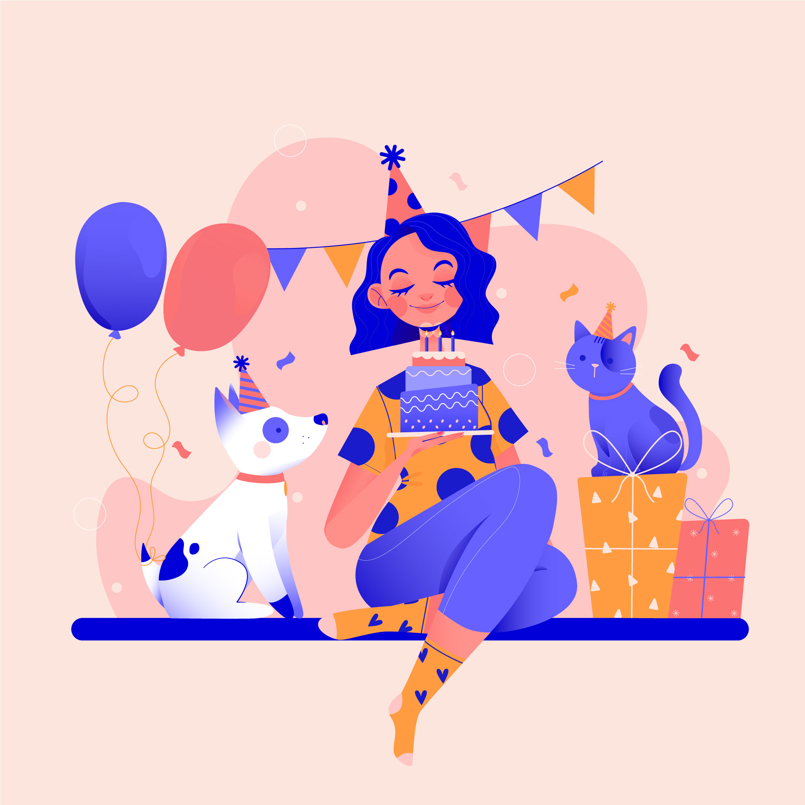

Cute Redbeard!
OH MY DOG!
“No matter how you’re feeling, a little dog gonna love you.”

LIVE
LAUGH
BARK
LOVE
CHILL
FRIEND
BEST
LIFE
CUDDLE
I
LOVE
YOU!
“There’s a saying. If you want someone to love you forever, buy a dog, feed it and keep it around.”
“There is no faith which has never yet been broken, except that of a truly faithful dog."
“A dog will teach you unconditional love. If you can have that in your life, things won’t be too bad.”
“Petting, scratching, and cuddling a dog could be as soothing to the mind and heart as deep meditation and almost as
good for the soul as prayer.”
"I Love you."

"The best way to get a puppy is to beg for a baby brother– and they’ll settle for a puppy every time.”

“I’ve seen a look in dogs’ eyes, a quickly vanishing look of amazed contempt, and I am convinced that basically dogs
think humans are nuts.”
“Every dog must have his day.”
“Love is a four-legged word.”